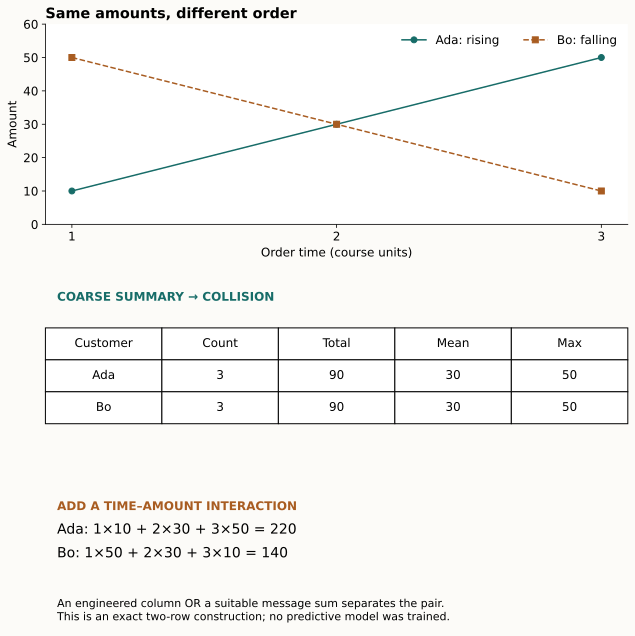
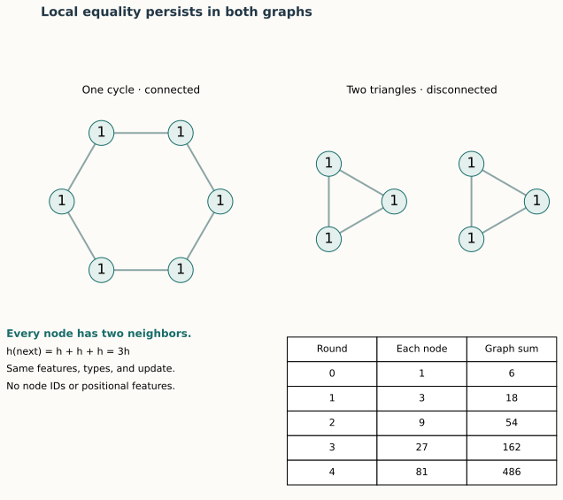
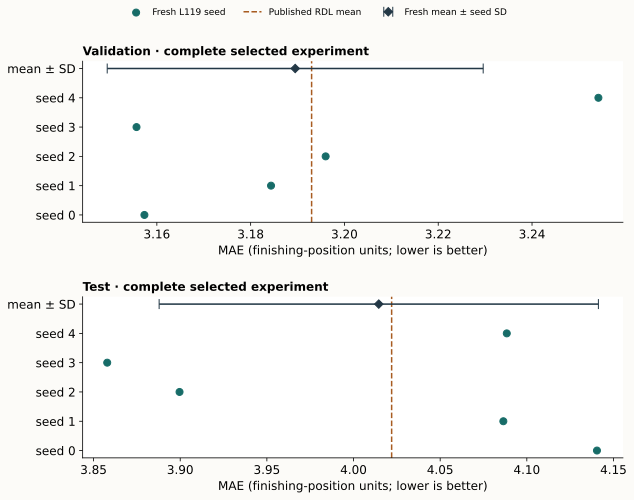

Year 3 · Quarter 4 · Lesson 119
Year 3 synthesis: graphs versus flat tables
From a plausible thesis to a defensible argument
Your win: write one page explaining when relational structure helps prediction, when flat features suffice, and what your Year 3 evidence actually establishes.
Student notebook · Executed solution · Quick reference · Writing template · Reproduction contract
Take the short route through Sections 1–5 and the writing task. Use Sections 6–8 and the notebook for the empirical audit. This is the synthesis before the Year 3 exit exam, not a new architecture survey.
1 · Separate information, computation, and evidence¶
Your mission is to test whether learned relational models unlock predictive value beyond a single-table workflow. The useful question is specific: which information reaches this predictor, which computation can use it, and under which evaluation protocol does it help?
A representation is the information made available to a model. For example, a customer row containing order count and total spending is one representation; dated order rows linked to that customer are another. A hypothesis class is the set of functions a model can express. Giving a graph to a limited message-passing network does not guarantee that the network can distinguish every pair of graphs.
Finally, empirical evidence is an observed result under a stated protocol. It is not interchangeable with a representation argument. A graph may contain additional information that is irrelevant to the target, too sparse to learn from, or unavailable at prediction time.
The causal chain is:
- The database contains particular attributes and relationships.
- Extraction decides which of them are visible for a prediction.
- Encoding and aggregation preserve some distinctions and erase others.
- Training tries to exploit the remaining distinctions.
- Evaluation tests the resulting predictor on specified future queries.
An error at any step weakens the conclusion. Fey et al.'s RDL blueprint supplies the relational modeling motivation. In this lesson, the small examples are original course constructions; they are not figures or benchmark results reproduced from that paper.
2 · A collision proves something narrow and useful¶
Return to Lesson 035 and Lesson 077. A collision occurs when distinct inputs become the same representation. Once that happens, a deterministic predictor receiving only that representation must return the same answer for both.
Worked example. Ada's order amounts at times 1, 2, 3 are [10, 30, 50]. Bo's are [50, 30, 10]. The labels in this authored exercise are simply “rising” and “falling”; they are not observed churn labels. Both summaries are (count=3, total=90, mean=30, max=50).
Predict first: can any classifier using only those four numbers label both examples correctly?


It cannot. In this balanced two-example world, it gets at most one of two labels right. Changing a tree into a neural network does not restore the discarded order. Repeating the same examples under more random seeds does not restore it either.
For any finite labeled set, partition the rows into groups with identical features. Within each group, the most accurate fixed prediction is the majority label. The observed representation ceiling is:
ceiling = sum(largest label count within each identical-feature group) / number of rows.
This is an exact bound on these observed rows for deterministic classifiers restricted to these features. It is not a confidence interval, a population estimate, or a promise that training will attain it. For continuous features, almost every row may be unique and this diagnostic may become uninformative.
Repair the representation. Add the feature sum(time × amount). Ada gets 1×10 + 2×30 + 3×50 = 220; Bo gets 1×50 + 2×30 + 3×10 = 140. A threshold at 180 separates them. A manually engineered table can therefore recover this distinction.
Connect to message passing. An order node could emit its time × amount contribution, and a sum aggregator could send those contributions to the customer. A learned message function could potentially learn a useful time–amount interaction. This construction only establishes representability with suitable inputs and operators; we did not train such a model here. If the node features contain amounts alone and aggregation ignores ordering, Ada and Bo still present the same multiset {10,30,50}.
In plain terms. The failure belongs to the chosen summary. A better feature or a suitable graph computation can repair it. Neither “all tables lose structure” nor “graphs automatically recover it” follows.
Notebook TODO 1: compute the ceiling from identical-feature groups. Its CHECK includes unequal group sizes so counting groups instead of observations fails.
3 · Message passing learns aggregation, but still compresses¶
Lesson 081 describes a message-passing neural network, or MPNN. Each node starts with a feature vector. A message function transforms information from a neighbor. An aggregation function, often sum or mean, combines incoming messages without depending on their input order. An update function combines the aggregate with the node's previous state.
One round communicates over one edge. A node normally needs two rounds to receive information from a node two edges away. The synchronous update uses the previous round's states throughout; it does not immediately reuse a just-updated neighbor.
In this scalar example, each node retains half its old value and adds half the mean of its neighbors. At baseline [A,B,C,D]=[2,4,8,10], A becomes 3 after one round and 3.75 after two. D is isolated and uses zero for its empty neighbor mean. Raising C to 20 changes A only after the second round, to 5.25. The widget is a course arithmetic example, not the RelBench layer.
A graph can contain a distinction that the model cannot use¶
Consider a six-node cycle and two disconnected triangles. Give every node the same feature 1, the same node type, and the same edge type. Every node has exactly two neighbors.
Use the shared update new_state = old_state + sum(neighbor_states). Every node becomes 3, then 9, then 27, then 81 in both graphs. Their six-node sum readouts are also equal. One graph is connected and the other is not, yet this computation cannot distinguish them.


The argument extends beyond these particular numbers for ordinary shared, permutation-invariant local message passing under these initial features: equal states and equal neighbor-state multisets remain equal at every round. Global sum or mean readout then sees the same six states. Extra distinguishing inputs or different operators change the assumptions.
Xu et al. formalize expressiveness limits and the conditions under which aggregation can distinguish multisets. Our two-graph calculation is a small witness you can verify yourself. More layers do not fix this symmetry. A hand-engineered connected-component count would distinguish these two graphs.
Transfer question: why does the extra time feature fix the order example while extra rounds do not fix the cycle example? Identify what changes in the first case and what stays indistinguishable in the second.
4 · Relation meaning and prediction time are part of the model¶
Types decide what a relationship means¶
Lesson 091 introduced relation-specific transformations. A relation type names a semantic connection, such as “buys” or “refunds.” It is not merely a drawing color.
Worked example. Both customers connect to values 10 and 4. For customer A the 10 is a purchase and the 4 is a refund; for B those roles are reversed. Untyped sum gives 14 for both. Give purchase messages weight +1 and refund messages weight −1: the outputs become +6 and −6. The topology and values did not change; the relation meanings did.
| Stage | Customer A | Customer B |
|---|---|---|
| Purchase contribution | +10 | +4 |
| Refund contribution | −4 | −10 |
| Typed sum | +6 | −6 |
| Untyped sum | 14 | 14 |
This scalar example is not a full R-GCN implementation. It isolates why relation-specific message functions can preserve a distinction that pooling all relations together discards. A table with separate purchase/refund columns can preserve it too. Even typed sums can collide for other inputs.
Notebook TODO 2: accumulate each relation's weighted source value at its destination. Tests include swapped relation names, repeated edges, and renamed node positions. Renaming positions must only rename outputs.
Time decides what the predictor is allowed to know¶
Lesson 104 distinguishes event time, when something happened, from availability time, when the prediction system could first know it. A row with event time 5 but availability time 9 is unavailable to a prediction at time 7.
For this course audit, a row is eligible only if both clocks are no later than the original query cutoff. A declared timeless dimension does not grant access to future events connected through it. None in this exercise means explicitly timeless; it must not be used as a shortcut for an unknown ingestion date.
| Two-hop path from the query at 7 | Event | Available | Decision |
|---|---|---|---|
| Customer → timeless dimension → row A | 5 | 9 | Exclude: arrived late |
| Customer → timeless dimension → row B | 6 | 6 | Include |
| Customer → timeless dimension → row C | 11 | 11 | Exclude: future event |
Notebook TODO 3: walk the graph using the same query cutoff at every hop. A test catches implementations that check event time alone.
Target outcomes may occur after the prediction timestamp; that is the prediction problem. They must not enter input features, and a training label must already be mature when the historical training process uses it. Feature-statistic fitting, mutable feature histories, and graph sampling need separate checks. An event-time sampler alone does not settle all of them.
5 · Build an argument with an evidence ledger¶
An evidence ledger attaches each claim to its source, measurement, and remaining limitation. It prevents a correct local computation from silently turning into a universal empirical conclusion.
| Claim | What supports it here | What remains open |
|---|---|---|
| These four summary features cannot distinguish the order pair | Exact collision and .5 observed ceiling | Frequency and predictive value of such collisions in real tasks |
| A richer representation can separate this pair | Explicit 220/140 calculation | Whether learning discovers a useful rule on new data |
| Ordinary message passing has limits | Cycle/triangles calculation under equal features | Behavior after adding distinguishing features or operators |
| Typed and time-valid access matters | Controlled relation and dual-clock checks | Actual ingestion/revision history in a real database |
| The selected RDL experiment is executable | Fresh five-seed full-data replay below | Historical run identity, all other tasks, and a fresh matched tabular comparison |
The previous Lesson 118 contributes lineage and a reproduction limitation. Its Home Credit full run remains NOT_RUN because the measured pilot projected beyond the budget. A correct port, a timing pilot, and a completed paper experiment are different kinds of evidence. Preserve that gap in your synthesis.
6 · Fresh empirical anchor: a complete selected RelBench replay¶
The empirical companion is RelBench v1, Table 7, rel-f1/driver-position, RDL column. A query identifies a driver and prediction date; the regression target describes subsequent finishing position. Mean absolute error (MAE) averages absolute differences between predictions and targets. Lower is better. Read Table 7 and Appendix B alongside the pinned release.
This is a new execution of the complete selected protocol from Lesson 117: all nine tables, 74,063 release-censored rows, 7,453 training queries, 499 validation queries and 760 test queries. Five declared seeds each train for ten full epochs. Validation selects the first minimum-MAE checkpoint. Test scores are recorded afterward and never used to choose epochs.

Diagram trace. Trace the inherited RDL predictor, then separate that measured model from the synthetic representation-collision argument. On a narrow screen, scroll the figure sideways.
Trace the actual computation. The query supplies the cutoff and seed node. Temporal sampling creates query-specific context. Table-specific encoders produce 128-wide row vectors; relative-age encodings carry time. Two typed GraphSAGE layers aggregate messages. A linear head reads the seed driver's vector. Training minimizes mean absolute error with Adam at learning rate .005; inference clips predictions to training-target percentiles 2 and 98. The full graph constructor, model and trainer are visible in the notebook.
Predict before inspecting the result: would a score close to the published mean establish that this freshly run model beats a freshly run feature-engineered model? Write your reason first.
Author-reference evidence: five fresh full-data fits for Lesson 119. The notebook default only rescores these stored predictions.
| Split | Fresh mean MAE | Sample seed SD | Published RDL mean | Verdict |
|---|---|---|---|---|
| val | 3.18950 | 0.04009 | 3.193 | CLOSE |
| test | 4.01457 | 0.12673 | 4.022 | CLOSE |
| Seed | Selected epoch | Validation MAE | Test MAE |
|---|---|---|---|
| 0 | 9 | 3.15735 | 4.14047 |
| 1 | 8 | 3.18435 | 4.08645 |
| 2 | 8 | 3.19599 | 3.89961 |
| 3 | 10 | 3.15566 | 3.85788 |
| 4 | 7 | 3.25415 | 4.08844 |
All 6,295 final query predictions were independently rescored. The largest raw-output discrepancy from the separately loaded original model on the same inputs was 2.86e-06. Selected experiment: COMPLETE; whole-paper parity: NOT_ESTABLISHED.
Pilot plus five-run measured worker resource estimate: USD0.0584. This excludes unitemized build/startup/storage charges. Reservations cap eight worker-hours at USD6.500736, with USD3.499264 held for overhead under the USD10 plan. Fresh evidence · Budget.


Interpret the comparison correctly¶
The published Table 7 F1 test means are 4.022 for RDL and 4.170 for LightGBM. Those are cited paper measurements. Only the RDL column was freshly trained here. Subtracting our new RDL score from the historical LightGBM mean does not create a matched comparison, a paired confidence interval, or a new claim of statistical superiority. The paper itself marks both test entries as best or not statistically different from best.
The plotted spread across five seeds describes training variability on one fixed task and split. It does not estimate variation across databases, future calendar periods, or feature-engineering choices. CLOSE uses a predeclared absolute mean tolerance of .2 MAE; it is a descriptive criterion, not an equivalence test.
Scope check. The release samples fanout
[128,64], whereas the paper's hyperparameter table lists 128. Preprocessing statistics use the test-censored database rather than a train-only fit. Historical seeds/runtime and real ingestion or revision histories are unavailable. Full selected released-protocol execution can be COMPLETE while historical identity and whole-paper parity remain NOT_ESTABLISHED. The contract lists each deviation.
7 · Notebook: make your argument survive checks¶
The notebook is independently readable. It embeds the figures and fresh prediction artifacts, and exposes the full reproduction implementation. Its default run executes course mechanisms and rescores real predictions; it does not silently retrain the cloud experiment.
- Group by representation: calculate the best observed label accuracy that any deterministic predictor could achieve from the available features.
- Keep relation meaning: aggregate source messages with the correct relation weight and receiving node.
- Keep one temporal cutoff: reject future and late-arriving rows at every hop.
- Align query identities: calculate MAE after joining predictions to targets by the full query key.
For Task 4, an entity can recur at multiple times. “Driver 90” is therefore insufficient as a query identity. The exercise deliberately permutes predictions, so a position-based score fails. Your function then rescores all five runs' actual validation and test outputs. A missing query, duplicate query or nonfinite prediction causes a failure rather than silently changing the population.
The optional full-data gate reruns all five ten-epoch fits with the same visible model. Use the pinned environment and budgeted Modal operator in the contract for author-equivalent execution. The gate is OFF by default. Live Colab verification is a separate status.
8 · Write the one-page synthesis¶
Use the submission template. Aim for 500–700 words; the goal is a compact argument, not a survey of every architecture.
Paragraph 1 — Claim and conditions. State a testable claim about a target, database, prediction time and competing representations. Identify the information that might matter. Avoid “graphs are better” without conditions.
Paragraph 2 — Mechanism. Work through one collision and its repair. Explain whether a better flat feature can also repair it. Connect the needed computation to neighborhood depth and relation types.
Paragraph 3 — Counterargument. Explain the cycle/triangles failure or another precise limitation. Address temporal availability and a case where the extra relations need not improve generalization.
Paragraph 4 — Evidence. Cite two primary sources and one measured artifact. State the selected reproduction scope and at least two deviations. Preserve Lesson 118's unrun status. Explain why the fresh RDL replay alone is not a fresh graphs-versus-tables contest.
Paragraph 5 — Falsification. Propose a fair comparison on identical queries and cutoffs, with train-only fitting for the proposed new experiment, validation-only tuning, a strong flat-feature baseline, and predefined metrics. Specify an outcome that would weaken your claim. A useful information ablation holds features and query populations fixed while removing or permuting relevant edges; a compute/selection budget must also be comparable. This proposed experiment is not claimed executed here.
Rubric, 0–2 each: precise conditional claim; correct mechanism; substantive counterexample; evidence/protocol discipline; falsifiable comparison. A fluent essay that hides a failed or unrun experiment cannot earn full evidence credit.
Exit ticket: submit the four live functions, the notebook report, and your synthesis. The teacher checks the code and challenges the argument. Author-reference execution does not mark your learning complete: PENDING_WRITTEN_DEFENSE.
Spacing: tomorrow, redraw the collision and its repair without notes. In seven days, explain the message-passing counterexample and the two-clock cutoff. In thirty days, rewrite the thesis paragraph using one new piece of counter-evidence.
Next: Lesson 120 asks you to build and defend a heterogeneous temporal GNN pipeline. This synthesis tells you what that pipeline must demonstrate. Ask the agent follow-up questions or paste your draft for a scored critique before advancing.
Carry this forward. Demonstrate the complete pipeline and defend it in the Year 3 exit exam. Continue to Lesson 120.